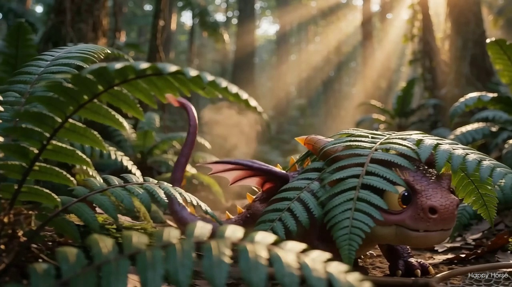
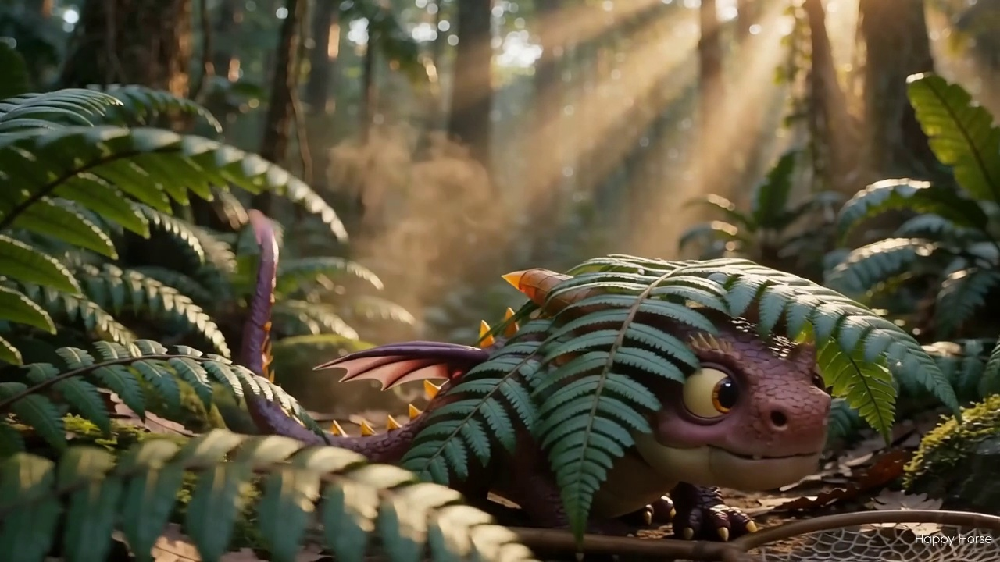
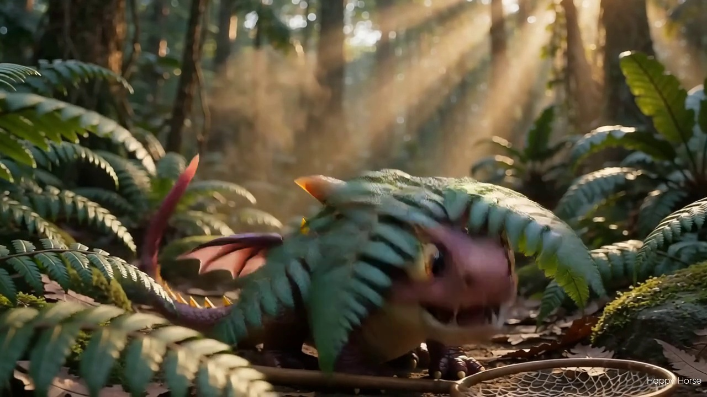
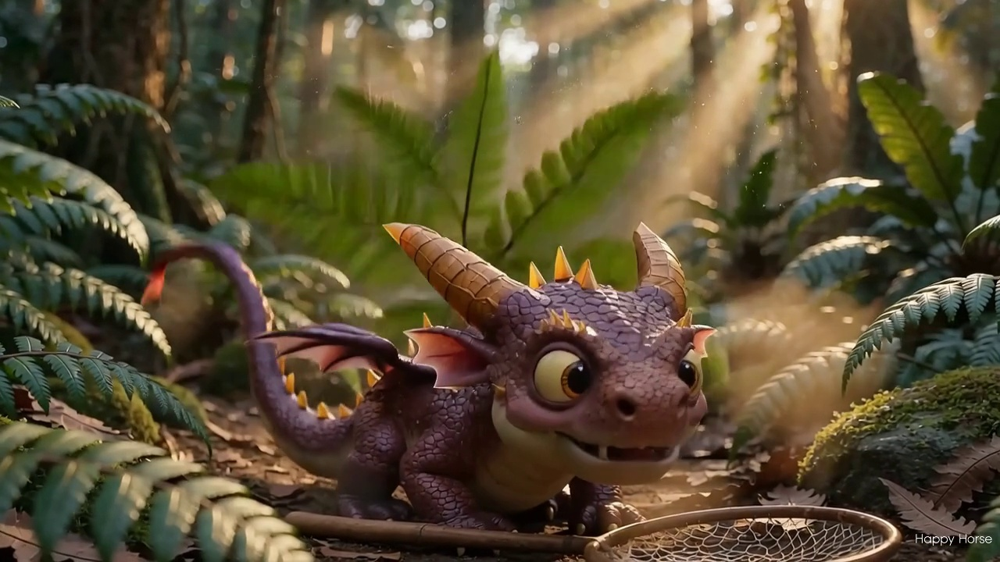
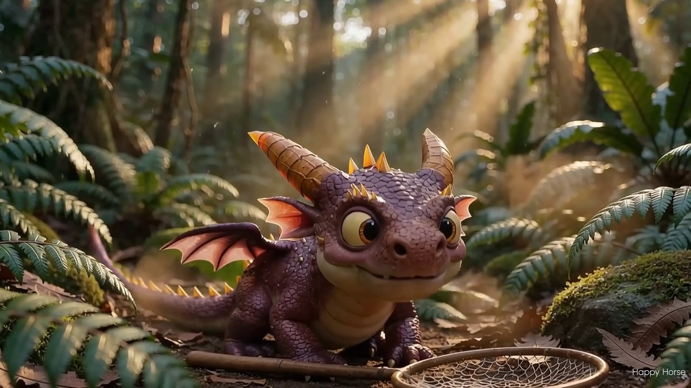
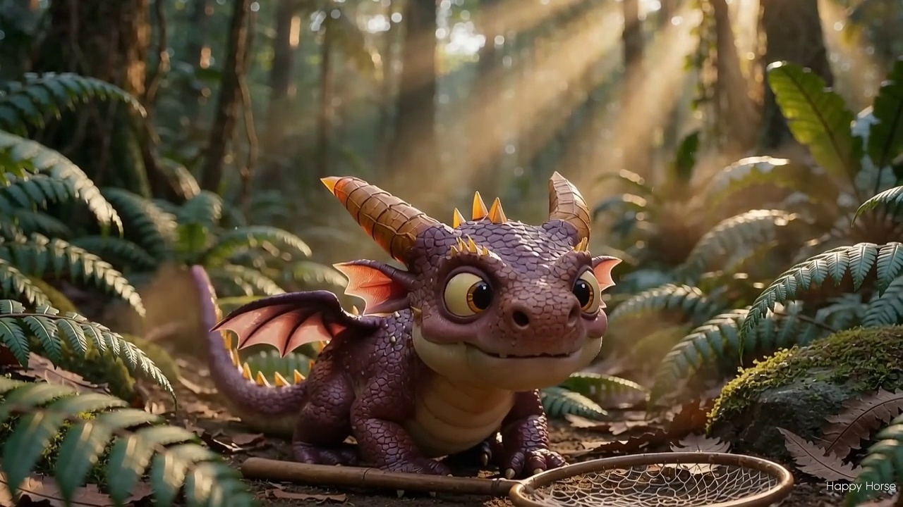
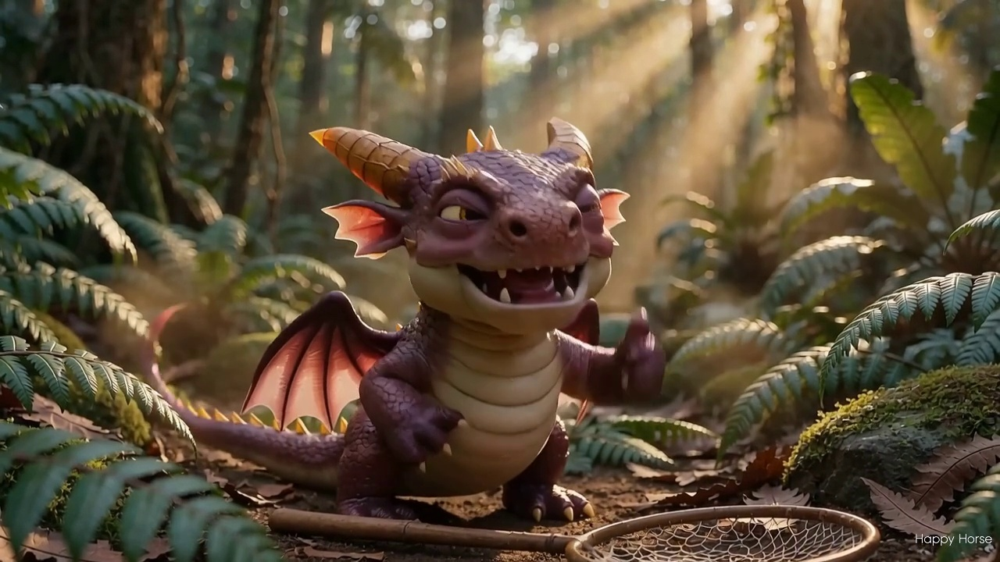
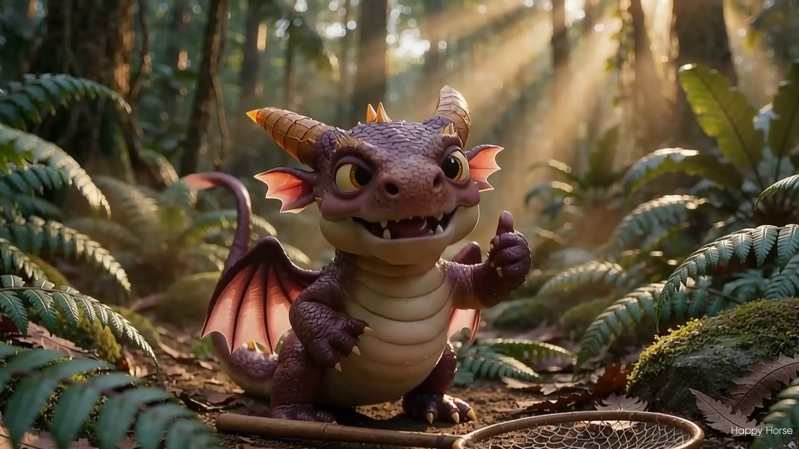

恐龍快找・遊戲開場影片提示詞設計
《藏不住的伴伴》捉迷藏喜劇 ｜ 電影真實場景 × 符合「快找」玩法 × 伴伴主演 ｜ 2026-10-16
① 設計概念與四項決策
一句話概念：把遊戲的「找隱藏物」玩法拍成實拍電影感的捉迷藏喜劇——伴伴自以為藏得天衣無縫，其實尾巴、翅膀全露在外面，觀眾一眼就「找到」牠（呼應「快找」）；被發現後牠打噴嚏破功、心虛傻笑，最後撿起地上的捕蟲網（＝遊戲的捕捉器）想反擊，撈到一顆發光的星願種子，得意地對鏡頭眨眼比讚。
- 電影感怎麼做：全片走「實拍 CG 生物」路線——像《名偵探皮卡丘》：真實雨林的光線、材質、淺景深與手持鏡頭，伴伴以寫實材質（細鱗、緞面柔光、次表面散射）置入其中。
- 怎麼搞笑：笑點全部來自「藏得很爛」——只藏臉不藏屁股、眼睛從葉縫偷看、一個噴嚏把掩體吹飛。零對白、零字幕，用動作節奏搞笑。
- 怎麼對應玩法：見 ② 對照表——找（鏡頭搜尋破綻）、✕（後製蓋章彩蛋）、捕捉器（真實捕蟲網道具）、過關（得意姿勢收尾）。
四項關鍵決策：
1. 刻意不走「風格A」：風格A 是遊戲內棋子的白底玩具公仔風；本片依需求走電影寫實路線，但角色配色與配件仍嚴格鎖定 2★ 定稿圖。
2. 畫面中不出現人類：視角＝玩家第一人稱「在森林裡找東西」，避免 AI 人臉崩壞，也最貼合「你來找」的玩法。
3. 影片本體不生成任何文字：AI 影片的文字必定亂碼（前例：game.mp4 木牌事件，commit 4ec580d）→ LOGO 一律後製疊上（見 ⑨）。
4. 修正舊稿錯誤：`_gen_sophnet_intro_video.py` 原把伴伴寫成「翠綠色小恐龍」，與 2★ 定稿（紫紅色小龍）不符，本版全面修正並新增「角色規格卡」鎖定。
1. 刻意不走「風格A」：風格A 是遊戲內棋子的白底玩具公仔風；本片依需求走電影寫實路線，但角色配色與配件仍嚴格鎖定 2★ 定稿圖。
2. 畫面中不出現人類：視角＝玩家第一人稱「在森林裡找東西」，避免 AI 人臉崩壞，也最貼合「你來找」的玩法。
3. 影片本體不生成任何文字：AI 影片的文字必定亂碼（前例：game.mp4 木牌事件，commit 4ec580d）→ LOGO 一律後製疊上（見 ⑨）。
4. 修正舊稿錯誤：`_gen_sophnet_intro_video.py` 原把伴伴寫成「翠綠色小恐龍」，與 2★ 定稿（紫紅色小龍）不符，本版全面修正並新增「角色規格卡」鎖定。
② 玩法對照表（遊戲機制 → 影片橋段）
| 遊戲機制 | 影片橋段 |
|---|---|
| 盤面分顏色區塊，每區只藏 1 個隱藏物 | 森林自然分成「蕨葉叢／石堆／樹洞」幾個藏身區，伴伴藏在其中一區 |
| 快找：一眼掃過去，比誰先找到 | 幕1 鏡頭橫移，只露出三個破綻（晃動的紫尾巴尖／整片粉紅翼膜／眨動的金瞳），讓觀眾先找到 |
| ✕ 標記排除：點格子打叉 | 後製彩蛋：錯的藏身點啪啪蓋上紅色 ✕ 印章（貼圖疊加，見 ⑨） |
| 捕捉器（捕蟲網圖示） | 幕3 伴伴撿起真實的木柄捕蟲網，揮網想抓鏡頭、結果撈住發光星籽 |
| 沙漏計時：歸零＝結束、抓一隻 +30 秒 | 幕2 噴嚏節奏＝慌張感；選配：石頭上的小沙漏（後製素材） |
| 過關＝剩餘秒數＋得意結算 | 結尾伴伴叉腰、眨眼、豎起小爪比讚（勝利姿勢，尾巴開心擺動） |
| 星願種子 🌌（提示與餵食的資源） | 捕蟲網撈到的「發光小星籽」，金光一閃（光效後製加） |
| 發現新夥伴「NEW!」 | 選配：結尾角標 NEW! 徽章（後製） |
③ 伴伴電影版・角色規格卡（每顆提示詞都要貼）
主體紫紅
#AF48DB深紫斑點
#7818C0金橘角爪
#E9901D金琥珀眼
#F7A007乳白腹部
#F8EBEF粉紅翼膜
#CD305C- 造型必須有的：圓滾滾寶寶小龍；頭頂兩支金橘色分節大彎角＋小鼻角；背脊一排小金刺；橙色小爪；粉色內耳與粉紅翼膜；金黃琥珀色大圓眼＋白色高光；開心微笑露小尖牙與粉紅舌；奶油白分節肚皮；身體有深紫斑點。
- 電影寫實化的「度」：保留 Q 版比例與全部特徵（一眼認得是伴伴），但材質換成寫實生物質感——天鵝絨般細鱗、柔和緞面反光、耳朵與翼膜帶次表面散射透光、身上有淡淡森林塵土與露水，與環境有真實接觸陰影。
- 參考圖（給支援參考圖的模型）：
assets/dinos_2/DFD-000_伴伴_2star.png（造型／配色定稿）、assets/dinos_2/bban_samples/_ref_banban_2star.png（白底壓平版）、assets/dinos_2/game_logo.png（LOGO 後製用）。
- 禁止：塑膠亮面／玩具公仔感（那是風格A，本片不要）、大眼縮小或變形、角變單支或無分節、全身換色（尤其不可出現綠色）、多隻伴伴、背景出現人類。
④ 主提示詞・單鏡萬用版（一次 5 秒說完整個笑點）
中文單鏡萬用版
電影級實拍質感，真實熱帶雨林，黃昏金色光束穿過高大樹冠，實拍級蕨葉、苔蘚岩石與落葉泥土，空氣中漂浮微塵與光斑，淺景深、背景柔焦、手持鏡頭微晃，溫暖電影調色。 鏡頭像在森林裡「尋找什麼」，緩慢橫移掃過蕨葉叢、石堆與樹洞。蕨葉後方藏著一隻圓滾滾的寶寶小龍「伴伴」：紫紅色細緻鱗片、奶油白肚皮、頭頂兩支金橘色分節大彎角、背脊小金刺、粉色內耳與粉紅翼膜、金黃琥珀色大圓眼。牠自以為藏得天衣無縫，但紫紅色尾巴尖和一整片粉紅翅膀露在葉子外一搖一搖，金黃眼睛還從葉縫偷看鏡頭。 被發現後牠慌張打了個大噴嚏——蕨葉全被吹飛，牠僵在原地，慢慢露出心虛的燦爛笑容（小尖牙與粉紅舌），順手撿起地上一支木柄捕蟲網擺出英雄姿勢，對鏡頭眨眼、豎起小爪比讚，尾巴開心地擺動。 寫實皮膚與光影質感、與地面有真實接觸陰影、電影級高細節、畫面穩定流暢、無字幕、無文字、無浮水印。
ENSingle-shot universial
Cinematic live-action look, real tropical rainforest at golden hour: warm sunbeams through the tall canopy, photoreal ferns, mossy rocks and fallen leaves on damp soil, floating dust motes, shallow depth of field, soft bokeh, gentle handheld camera, warm cinematic color grading. The camera drifts sideways like it is searching for something, gliding past fern bushes, a rock pile and a hollow log. Hidden behind the ferns is a chubby baby dragon "BanBan": fine-scaled amethyst-purple skin, creamy white belly, two golden-orange segmented curved horns, a row of tiny golden spines on his back, pink inner ears and pink wing membranes, huge round golden-amber eyes with white highlights. He thinks he is perfectly hidden, but his purple tail tip and one whole pink wing stick out of the leaves, swaying, and his golden eyes peek at the camera through the leaves. Busted, he sneezes suddenly - the fern leaves blow away, he freezes, then slowly breaks into a sheepish beaming smile (tiny white fangs, pink tongue), grabs a small wooden-handled butterfly net from the ground nearby, strikes a hero pose, winks at the camera, gives a little claw thumbs-up, tail wagging happily. Photorealistic skin and lighting, real contact shadows on the ground, cinematic high detail, stable smooth footage, no captions, no text, no watermark.
⑤ 三幕分鏡版（3 × 5 秒＝約 15 秒完整開場）
幕 1「找一找」— 先讓觀眾贏
中文
電影級實拍質感，真實熱帶雨林，黃昏金色光束穿過樹冠，蕨葉、苔蘚岩石與落葉泥土皆為實拍級真實質感，空氣中漂浮微塵與光斑，淺景深、背景柔焦，手持鏡頭。 鏡頭像在森林裡尋找什麼，緩慢橫移掃過三個可疑的藏身點：蕨葉叢後露出一根一晃一晃的紫紅色尾巴尖；大石頭旁露出一整片粉紅翼膜；樹洞裡一雙金黃琥珀色的大眼睛眨了一下又縮回去。一隻彩色蝴蝶飛過鏡頭前。鏡頭停住，彷彿發現「找到了！」。 高細節、畫面穩定流暢、無字幕、無文字。
EN
Cinematic live-action look, real tropical rainforest at golden hour, photoreal ferns, mossy rocks and leaf litter, floating dust motes, shallow depth of field, soft bokeh, handheld camera. The camera drifts slowly sideways like it is searching for something, sweeping past three suspicious hiding spots: a purple tail tip swaying from behind a fern bush; a whole pink wing membrane sticking out beside a large rock; a pair of huge golden-amber eyes blinking inside a hollow log, then ducking back. A colorful butterfly flutters across the lens. The camera stops, as if it just "found it!". High detail, stable smooth footage, no captions, no text.
幕 2「破功」— 笑點主場
中文
電影級特寫，真實熱帶雨林午後光。圓滾滾的寶寶小龍「伴伴」躲在一片超大的蕨葉後面：紫紅色細鱗皮膚、奶油白肚皮、頭頂兩支金橘色分節大彎角、背脊小金刺、粉色內耳與粉紅翼膜、金黃琥珀色大圓眼。牠把爪子放在嘴邊對鏡頭「噓——」，眼睛得意地笑成彎月。 下一秒牠忍不住打了個大噴嚏，蕨葉全被吹飛；牠僵住，慢慢轉頭看向鏡頭，露出心虛的燦爛笑容（小尖牙與粉紅舌），搔搔後腦杓。手持鏡頭晃了一下，像在憋笑。 寫實皮膚與光影質感、電影級高細節、無字幕、無文字。
EN
Cinematic close-up, real tropical rainforest, warm afternoon light. A chubby baby dragon "BanBan" hides behind one huge fern leaf: fine amethyst-purple scales, creamy white belly, two golden-orange segmented curved horns, tiny golden back spines, pink inner ears and pink wing membranes, big round golden-amber eyes. He raises one claw to his mouth and shushes the camera, eyes curving into a smug smile. A second later he cannot hold it and sneezes hard - the fern leaves blow away; he freezes, slowly turns to the camera with a sheepish beaming smile (tiny white fangs, pink tongue) and scratches the back of his head. The handheld camera shakes once, like it is holding back laughter. Photorealistic skin and lighting, cinematic high detail, no captions, no text.
幕 3「捕捉器」— 反擊與收尾
中文
電影級實拍質感，真實熱帶雨林，黃昏金色微光，淺景深。圓滾滾的寶寶小龍「伴伴」從地上撿起一支真實的木柄捕蟲網（紅棕色圓框、米白色網），牠有紫紅色細鱗、奶油白肚皮、金橘色分節大彎角、粉色內耳與粉紅翼膜、金黃琥珀色大圓眼。 牠得意地朝空中一揮，網子撈住一顆漂浮的發光小星籽，金光閃閃、細微光塵灑落。牠舉著網子轉向鏡頭，單手叉腰、眨眼、豎起小爪比讚，尾巴開心地擺動。鏡頭緩慢拉遠，畫面中央留出乾淨空間。 寫實光影質感、電影級高細節、無字幕、無文字。
EN
Cinematic live-action look, real tropical rainforest, warm golden-hour glow, shallow depth of field. A chubby baby dragon "BanBan" picks up a real wooden-handled butterfly net from the ground (red-brown round rim, cream mesh). He has fine amethyst-purple scales, a creamy white belly, two golden-orange segmented curved horns, pink inner ears and pink wing membranes, big round golden-amber eyes. He swings it proudly through the air and catches a floating glowing star-seed; golden sparkles and fine light dust fall. He turns to the camera holding the net, one claw on his hip, winks, gives a claw thumbs-up, tail wagging. The camera slowly pulls back, leaving clean empty space in the center of frame. Photorealistic lighting, cinematic high detail, no captions, no text.
⑥ 備選笑點（想換口味時替換幕2 的橋段）
- 駝鳥式藏法：頭埋進蕨葉裡，屁股和尾巴整坨在外面，還自以為很安全。
- 扮雕像：站在石頭上硬撐不動裝石雕，蝴蝶停在牠角上，鼻尖冒汗、眼皮發抖。
- 樹枝太小：拿一根小樹枝擋臉，根本遮不住，緊張到整根樹枝跟著抖。
- 躲寶箱：想擠進寶箱後面，蓋子啪一聲夾到尾巴，痛得跳起來（寶箱＝遊戲的 🧰 彩蛋）。
- 荷葉擋臉：雙手舉一片小荷葉只遮住鼻子，眼睛眨巴眨巴看著鏡頭（單鏡版已是此變體）。
⑦ 負向提示詞
中文負向詞
塑膠感, 硬塑料光澤, 乙烯基公仔感, 玻璃般光滑, 卡通扁平淡渲, 蠟像感, 過曝, 灰暗濁色, 模糊, 低解析度, 變形, 五官不穩, 眼睛不對稱, 多餘肢體, 多隻主角, 綠色身體, 文字, 字幕, 浮水印, 簽名, 邊框, 慢動作, 定格, 畫面閃爍撕裂, 背景出現人類
ENNegative
plastic toy look, vinyl gloss, glassy smooth skin, flat cartoon shading, wax figure, overexposed, muddy color, blurry, low resolution, deformed anatomy, unstable face, asymmetric eyes, extra limbs, multiple protagonists, green body, text, subtitles, watermark, signature, border, slow motion, freeze frame, flicker, tearing, humans in background
⑧ 技術參數與成本
| 項目 | 值 |
|---|---|
| 管線 / 端點 | SophNet /videogenerator/generate（Bearer 認證；金鑰檔 assets/dinos_2/bban_samples/_sophnet_key.txt，已 gitignore） |
| 模型 | happyhorse-1.0-t2v（2026-10-16 探針確認可部署） |
| 生成參數 | duration 5 · resolution 720P · ratio 16:9 |
| 成本 | 720P ¥0.9/秒 → 單鏡 ≈ ¥4.5；三幕 ≈ ¥13.5 |
| 執行腳本 | assets/dinos_2/bban_samples/_gen_sophnet_intro_video.py single|1|2|3 |
| 輸出位置 | assets/intro_bban_hide_720p.mp4（單鏡）／assets/intro_bban_hide_s1..3_720p.mp4（三幕） |
| 跨模型通用 | 同組提示詞可直貼可靈 Kling／Veo／Runway／Sora 等（優先英文版） |
| 比例備註 | 16:9 適合橫式宣傳／商店預告；若要塞進手機直式開場，另生成 9:16 版本（改 ratio 參數） |
| 連戲建議 | 三幕同 seed（若模型支援）；成品逐幀抽查可用既有 _check_intro_frames.py（cv2） |
⑨ 後製與音效建議（沿用 game.mp4 的實戰教訓）
- LOGO 疊字：影片保持無文字，用 OpenCV＋imageio-ffmpeg 把
assets/dinos_2/game_logo.png疊上去——滿版置中淡入 → smoothstep 縮小飛向畫面左上角（沿用既有 splash「logo 飛進主選單」的動效曲線，結尾可無縫接上遊戲開場）。 - 遊戲 UI 彩蛋（全部後製貼圖，別讓模型畫）：錯的藏身點啪啪蓋紅色 ✕ 印章（＝標記排除）；捕捉器游標飛入；星願種子光暈加強；選配小沙漏與 NEW! 徽章。
- 音效點：搜尋段＝樹葉沙沙＋鳥鳴；尾梢／眼睛破綻＝輕巧木琴「叮」；噴嚏＝卡通 sneeze；葉子飛散＝whoosh；撈到星籽＝晶亮鈴聲；LOGO 落點＝勝利音效。
- 接入點：放在現有
#splash（logo 飛入動畫）之前作為點擊後開場影片；幕3 最後 1 秒乾淨定格最適合切 LOGO。
⑩ 使用方式
cd assets/dinos_2/bban_samples python _gen_sophnet_intro_video.py # 單鏡萬用版（5s，預設） python _gen_sophnet_intro_video.py 1 # 三幕・幕1「找一找」 python _gen_sophnet_intro_video.py 2 # 三幕・幕2「破功」 python _gen_sophnet_intro_video.py 3 # 三幕・幕3「捕捉器」
恐龍快找 DragonFinder ｜ 開場影片提示詞設計報告 ｜ 產出日期 2026-10-16 ｜ 工作紀錄見 git commit log
伴伴開場動畫（捉迷藏版）交付驗證
SophNet videogenerator（happyhorse-1.0-t2v）・單鏡萬用版 ｜ 2026-10-16 ｜ 任務 ID：intro-video ｜ 提示詞設計文件：
bban_intro_video_prompts_report.htmlassets/intro_bban_hide_720p.mp4（瀏覽器可直接播放）
一、成品規格
| 項目 | 值 |
|---|---|
| 解析度 / 幀率 / 長度 | 1280×720（16:9）/ 24 fps / 5.12 秒（123 幀） |
| 檔案大小 | 3.8 MB（3,812,306 bytes） |
| 模型 / 端點 | happyhorse-1.0-t2v ・ POST /videogenerator/generate，輪詢 GET {BASE}/{task_id} |
| 任務 ID | 79OOG9IRuXgemqMoHIKEFb（狀態 succeeded；結果位於 result.content.video_url） |
| 費用 | 720P ¥0.9/秒 × 5 秒 ≈ ¥4.5（本任務 1 次成功） |
| 驗證 | cv2 解碼成功、8 影格抽樣目視全數通過（第三節） |
二、需求對照（驗收）
| 需求（使用者 2026-10-16 更新） | 結果 | 說明 |
|---|---|---|
| 有趣搞笑 | ✅ 通過 | 自以為藏好的捉迷藏破功喜劇：紫紅尾巴尖與粉紅翅膀外露還偷看鏡頭 → 大噴嚏吹飛蕨葉 → 心虛燦笑 → 眨眼比讚 |
| 符合恐龍快找玩法 | ✅ 通過 | 「尋找→發現→捕捉」核心循環完整呈現：鏡頭搜尋、三處破綻、木柄捕捉網入鏡收尾 |
| 必須帶有伴伴 | ✅ 通過 | 全片主角；紫紅鱗片、奶油白肚、金橘分節彎角＋背刺、粉紅內耳與翼膜、金黃琥珀大眼、小尖牙粉舌——對照 DFD-000_伴伴_2star.png 家族特徵全中 |
| 電影真實場景 | ✅ 通過 | 實拍級熱帶雨林、黃昏金色光束、漂浮微塵、淺景深柔焦、手持微晃、溫暖電影調色、接觸陰影紮實 |
| 敘事節拍（單鏡萬用版提示詞） | 出現時間 |
|---|---|
| 鏡頭橫移搜尋，蕨葉後躲藏、尾巴與翅膀外露、金黃眼偷看 | 0.3s–1.0s（影格 1–2） |
| 被發現 → 大噴嚏吹飛蕨葉、捕捉網入鏡 | 1.6s–2.2s（影格 3–4） |
| 破功後正面亮相：全身特寫、網子在前景 | 2.9s–3.5s（影格 5–6） |
| 燦爛笑容（尖牙粉舌）、眨眼、比讚收尾 | 4.1s–4.8s（影格 7–8） |
三、影格抽樣（8 格敘事弧）








四、生成提示詞（single・單鏡萬用版）
電影級實拍質感，真實熱帶雨林，黃昏金色光束穿過高大樹冠，實拍級蕨葉、苔蘚岩石與落葉泥土，空氣中漂浮微塵與光斑，淺景深、背景柔焦、手持鏡頭微晃，溫暖電影調色。
鏡頭像在森林裡「尋找什麼」，緩慢橫移掃過蕨葉叢、石堆與樹洞。蕨葉後方藏著一隻圓滾滾的寶寶小龍「伴伴」：紫紅色細緻鱗片、奶油白肚皮、頭頂兩支金橘色分節大彎角、背脊小金刺、粉色內耳與粉紅翼膜、金黃琥珀色大圓眼。牠自以為藏得天衣無縫，但紫紅色尾巴尖和一整片粉紅翅膀露在葉子外一搖一搖，金黃眼睛還從葉縫偷看鏡頭。
被發現後牠慌張打了個大噴嚏——蕨葉全被吹飛，牠僵在原地，慢慢露出心虛的燦爛笑容（小尖牙與粉紅舌），順手撿起地上一支木柄捕蟲網擺出英雄姿勢，對鏡頭眨眼、豎起小爪比讚，尾巴開心地擺動。
寫實皮膚與光影質感、與地面有真實接觸陰影、電影級高細節、畫面穩定流暢、無字幕、無文字、無浮水印。
五、已知限制與後續選項
⚠ 右下角仍有平台「Happy Horse」浮水印（本端點無 watermark 參數；影片檔名本身即
_watermark.mp4）。若要無浮水印版需待 /task 端點 Wan2.2 部署後以 watermark:false 重跑，或後製遮罩/裁切。三幕分鏡版（找／破功／捕捉器＋LOGO 留白）提示詞已備妥於設計文件，每支生成成本約 ¥4.5，隨時可跑。舊「蛋孵版」影片（伴伴誤為綠色）留檔於 intro_animation_report.html。📌 重複生成備註（誠實揭露）：本次工作期間因並行流程誤差，同一提示詞被重送一次（任務
ZJbbCbu6yXMrRXtsi3q2t，額外花費 ≈¥4.5）。兩版皆完整，經 A/B 目視比較後保留原版（上方播放的就是原版，檔案 3,812,306 bytes、md5 8bdae6c4…）；備選版本（3,784,377 bytes，表演略有差異）留存於 C:/tmp/intro_bban_hide_takeB_720p.mp4，若想換用可隨時置換 assets/intro_bban_hide_720p.mp4。本任務累計生成費用 ≈¥13.5（蛋孵版 4.5 ＋ 捉迷藏版 4.5 ＋ 重複 4.5）。六、檔案索引
| 檔案 | 用途 |
|---|---|
assets/intro_bban_hide_720p.mp4 | 本次交付成品（本報告上方可直接播放） |
assets/dinos_2/bban_samples/_gen_sophnet_intro_video.py | 生成腳本（single/1/2/3 四版提示詞，argv 選擇，一鍵重跑） |
assets/dinos_2/bban_samples/_intro_hide_frames/*.jpg | 8 張驗證影格 |
bban_intro_video_prompts_report.html | 提示詞設計文件（規格卡・分鏡・負向詞・成本） |
intro_animation_report.html | 舊「蛋孵版」留檔（方向已更新，僅參考） |